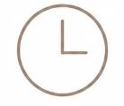
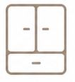
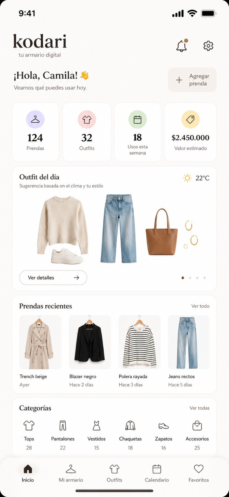

Por qué Kodari

La IA procesa tu armario y genera combinaciones listas para usar en menos de 10 segundos, sin que tengas que pensar nada.
Kodari consulta el pronóstico de tu ciudad y ajusta las sugerencias según la temperatura, lluvia o viento del día.
Cuanto más la usás, mejor te conoce. Aprende tus preferencias y lo que usás más, y deja de sugerirte lo que nunca te ponés.

Fotografiá cada prenda una vez y Kodari la guarda y organiza. Nunca más "no sé qué tengo para ponerme".

Interfaz principal de Kodari — selección de outfit del día
Nuestro proyecto
Kodari surgió de una situación que a casi todo el mundo le pasó: pararse frente al armario lleno de ropa y no saber qué ponerse. No porque no haya nada, sino porque combinar bien una ropa con otra, tener en cuenta el clima, la ocasión y el propio estilo al mismo tiempo es más difícil de lo que parece.
La idea fue simple: ¿y si hubiera una app que resolviera eso? No solo mostrando ropa al azar, sino pensando en vos. Que sepa qué tenés, qué te gusta, adónde vas y qué tiempo está haciendo hoy afuera. Una especie de estilista digital que vive en el celular.
Así nació Kodari. El proceso empieza cuando el usuario fotografía cada prenda de su armario y la sube a la app. Kodari clasifica automáticamente cada ítem por categoría, color y estilo usando visión artificial. A partir de ahí, el armario es digital y la app puede trabajar con él.
Cada mañana, Kodari consulta el pronóstico del tiempo para la ubicación del usuario y le propone entre dos y tres outfits completos según la temperatura esperada y el tipo de ocasión que el usuario ingresó: trabajo, salida informal, evento, deporte, etc. La sugerencia no es aleatoria; se basa en combinaciones reales que funcionan bien juntas.
El sistema aprende con el tiempo. Si el usuario acepta un outfit o lo descarta, Kodari toma nota. Si siempre elige colores neutros, deja de proponer combinaciones muy llamativas. Si nunca usa determinadas prendas, las señala como "dormidas" y sugiere cómo incorporarlas de una manera diferente. El objetivo es que el armario que ya se tiene se aproveche al máximo.
Una de las funciones más interesantes es la vista previa de cómo queda el outfit. A través de un modelo simplificado, el usuario puede ver las prendas combinadas antes de vestirse. Esto ahorra tiempo y evita el famoso "me lo probé y no me convencía" ya en la puerta de casa.
Kodari también tiene en cuenta el día y la hora. No es lo mismo un martes a las 9 de la mañana que un sábado a la noche. La app diferencia entre momentos del día y ajusta sus propuestas en consecuencia. Y si el usuario tiene eventos agendados en el calendario del celular, puede conectarlos para que Kodari los tenga en cuenta a la hora de elegir.